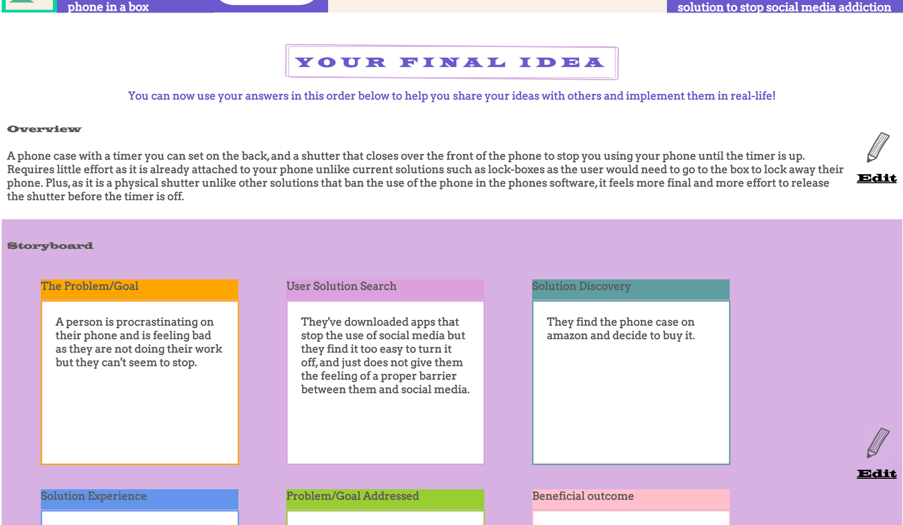
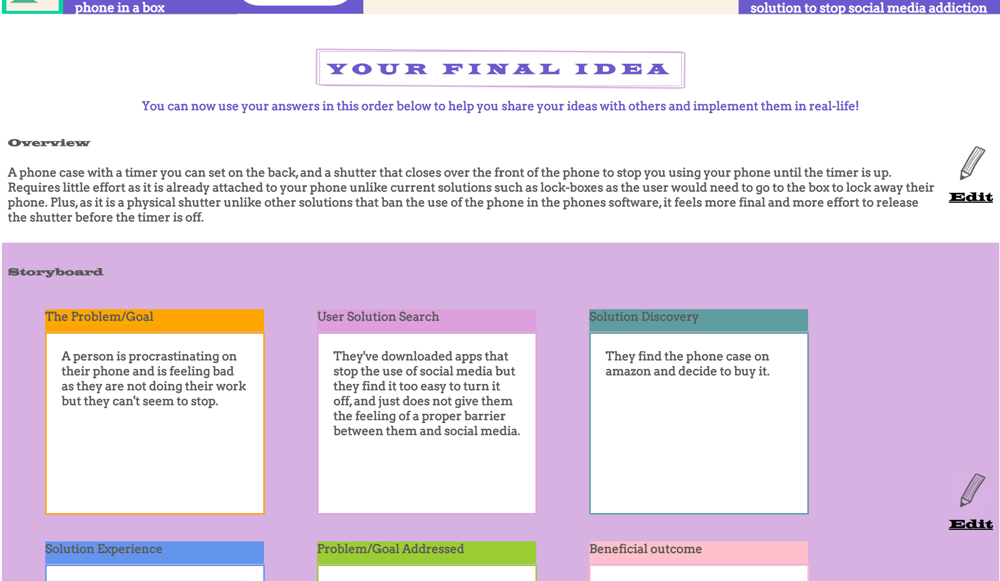

How does this machine work?
IdeaMachine is the solution to turn any of your ideas into new, creative AND comprehensive ideas
that make you sound like a genuis! It does this through 3 big steps.
But firstly, there is 1 rule you must follow throughout this whole system: do not hold back!
Write down all of your wacky, unique ideas!! The point of this system is to get your creative juices flowing
so always write down your ideas even if you think they sound silly
If you get confused at any step, just click this button on the page to get some help
on the page to get some help
Step 1: Brainstorm

In this first step,
we will be brainstorming 2-3 brief ideas to get you started.
If you're stuck for ideas and need inspiration, go
online and do some research around the problem area, this may spark an idea
Time suggestion: 5-10 minutes
To brainstorm ideas, click on 'Add idea'  (see screen below). This will add an idea box
in which you can write a new brainstorm idea.
(see screen below). This will add an idea box
in which you can write a new brainstorm idea.
Once you have come up with a few ideas, pick one you want to make more creative in the next step.
So, to choose the idea you want to use
click 'Idea Machine-ify'  at the bottom of that idea. This idea will then be shown in the top left of the navigation
bar in the next step.
at the bottom of that idea. This idea will then be shown in the top left of the navigation
bar in the next step.
You can change the idea you want to use as the foundation at anytime
by changing 'This Idea' on the navigation bar through the drop-down list labeled 'Change'.
 See next step to see what you'll be doing with your chosen brainstorm idea!
See next step to see what you'll be doing with your chosen brainstorm idea!

Step 2: Explore

Next, we will be making your idea more creative with the SCAMPER technique!
Time suggestion: 10-15 minutes
The SCAMPER technique works by using your brainstorm idea and altering certain parts/elements
of it to make it more creative. It does this through different prompts according to the SCAMPER letters:
Subsitute, Combine, Adapt, Put to other uses, Eliminate, Redesign.
So on the SCAMPER screen, there will be the SCAMPER letters in seperate circles on the page.

EXAMPLE:
If we click on the S letter, the cue below will be Subsitute. Underneath, there will be a question to help us delve deeper
into the Subsitute cue, such as "Can I use other ingrediants or materials?".
So, if our problem was "How could we solve social media addiction?", and our brainstorm idea was
"Have someone come in and throw your phone out of the window everytime you go on social media", then I could create a new idea in the text-box based on this question
"Have a dog come in and grab your phone everytime you go on social media". Here I have subsituted one element of my idea,
and created a new, different idea.
Try to come up with an idea for each cue, as this will really help you to develop creative ideas.
When you have finished coming up with ideas, press the finish button at the bottom of the screen.

When you press finish, you will be taken to the SCAMPER summary screen that shows all of your ideas
from SCAMPER.
Now, we want to use these ideas as inspiration to change your original brainstorm idea and make it more creative.
You can change your original brainstorm idea in the textbox at the top of the page.
Once you have updated this idea, press  and we can go onto the next and final step!
and we can go onto the next and final step!

Step 3: Expand and Finalise your idea!

Finally, we will be expanding the details of
your idea so you can successfully pitch it to others. The details of an idea
will demonstrate to others it's feasibility to solve the problem and its overall benefits.
Therefore when pitching your idea, the details will make sure that your idea
will not be overlooked!
Time suggestion: 10-15 minutes
There are 2 steps to the expansion of you idea.
Press  to go to Step 1
to go to Step 1
Note: if you have already completed this section with your idea, you can jump straight to the end
to see the final product by pressing 'See Finalised Idea'

In Step 1, we will be creating 2-3 key points of the idea that quickly highlight what the idea is, how it works and the main
benefit of the idea. This will grab the listener's attention straight away and will secure their attention
for the rest of the pitch.
Remember: these should be short, snappy points so your idea is clear to the listener.

In Step 2, we will be creating a story of your idea solving the problem. Stories
are very effective at painting a picture of your ideas to others and clarifying the details of it
in relation to the problem.
 Now we are at the final screen! This screen displays all of your inputs in this section, so you can print this off and use it to pitch your idea to others.

You can now either finish here, or go back through any of the previous steps! You can also choose to go back
to the brainstorm screen and put another brainstorm idea through the IdeaMachine :D Just click 'Brainstorm ideas' on
the navigation bar or simply change the idea you're working on through the drop-down list also on the navigation bar.
Now we are at the final screen! This screen displays all of your inputs in this section, so you can print this off and use it to pitch your idea to others.

You can now either finish here, or go back through any of the previous steps! You can also choose to go back
to the brainstorm screen and put another brainstorm idea through the IdeaMachine :D Just click 'Brainstorm ideas' on
the navigation bar or simply change the idea you're working on through the drop-down list also on the navigation bar.
Right your all set to get ideating, have fun!